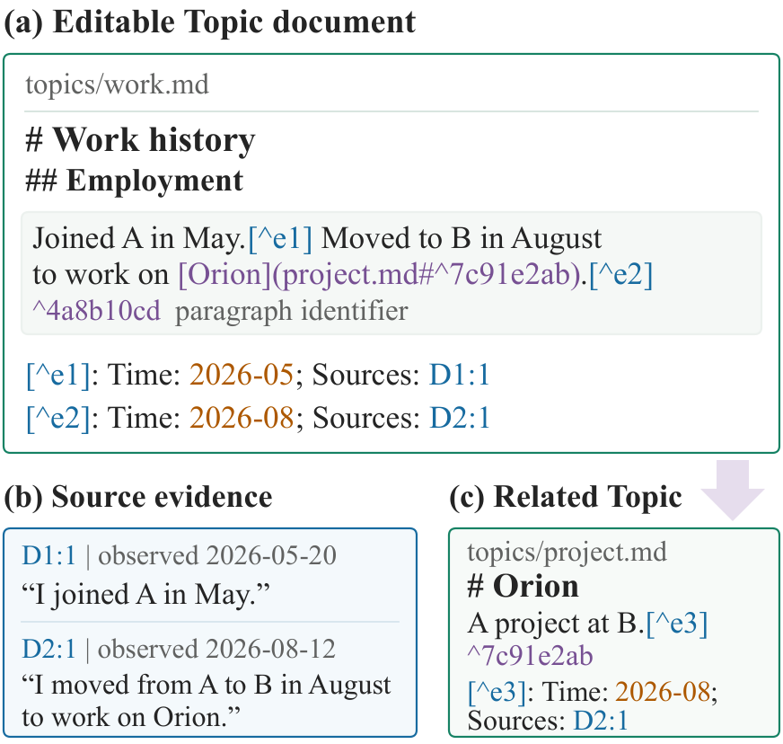
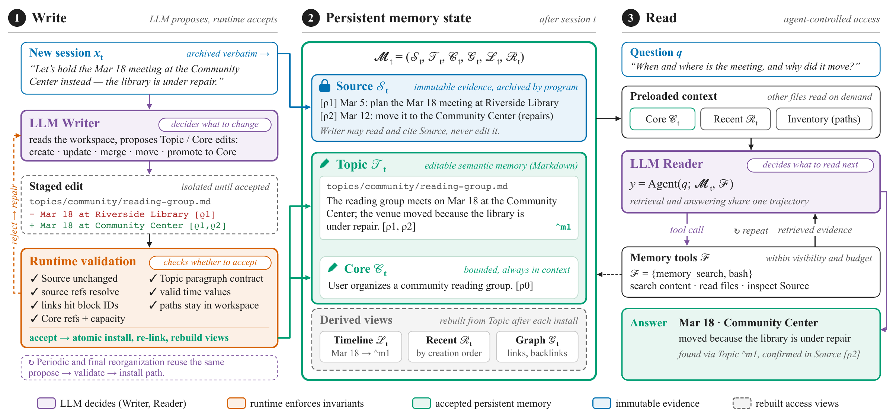

SoMem: Can LLM Agents Organize Their Own Memory?
Best Reported Results
93.25% on LoCoMo · 90.20% on LongMemEval-S
Highest full-set SoMem accuracy in the manuscript's backbone and cross-model experiments.
| Benchmark | LJ accuracy | Questions | Writer | Reader |
|---|---|---|---|---|
| LoCoMo | 93.25% | 1,540 (all, categories 1–4) | GPT-5.6 Luna | Qwen 3.8 Flash |
| LongMemEval-S | 90.20% | 500 (all) | DeepSeek V4 Flash | DeepSeek V4 Flash |
LoCoMo reuses frozen memory across Writer and Reader models. LongMemEval-S uses the same model for construction and answering, with up to 50 QA turns. Both use GPT-4o-mini judging; the manuscript does not explicitly specify Reader reasoning effort for these configurations. Different-model results are separate from the shared-Reader comparison.
Reader-effort experiments — fixed subsets
| Benchmark | Best subset score | Questions | Reader | Requested effort |
|---|---|---|---|---|
| LoCoMo | 95.00% LJ accuracy | 100 | GPT-6.1 Sol | xHigh |
| BEAM-100K | 70.83% mean nugget score | 200 | Qwen 3.8 Flash | None |
These are subset scores, not full-set results. Memory and questions are reused within each sweep; the scaling tables and accompanying text do not identify the Writer. See configurations and result provenance. These manuscript results have not been rerun with the public recipes.


Let the agent organize its memory
- Ordinary documents. The agent decides what to summarize, how to group related information, and when to revise existing topics.
- Preserved evidence. Summaries stay linked to the original interactions, keeping precise details available for later inspection.
- Validated updates. The runtime checks edits and derives relational, temporal, and recent-memory views from accepted content.
- Cross-model reuse. Constructed memory can be used by a different Reader model.
Linked memory documents. A Topic paragraph can contain multiple events, each with its own time and Source evidence. Paragraph references connect related information across documents.
Abstract
In most LLM agents, weights are fixed after deployment, so new information must be retained in external memory. Existing approaches often rely on predefined records and fixed organizational rules, which cannot readily accommodate evolving tasks and interactions. This raises the question: can LLM agents organize their own memory using ordinary documents?
We introduce self-organized memory (SoMem), a framework that stores memory in linked documents. The agent decides what to summarize, how to group related information, and when to revise existing topics, and every summary it produces stays linked to the original interactions as evidence. The runtime validates updates and automatically derives temporal, relational, and recent-memory views from the organized content. At query time, the agent chooses what to search and read, following document links and inspecting original evidence as needed.
On LoCoMo, BEAM-100K, and LongMemEval-S, SoMem outperforms the strongest baseline by 2.66, 3.10, and 2.00 percentage points, respectively. The constructed memory can be reused across models, and additional reasoning effort can further improve answer quality. These findings demonstrate the feasibility of agents organizing and using their own persistent memory through ordinary documents. Code is available at: https://github.com/Qi202/SoMem.
Method

topics/core.md, included in every query's initial context. The runtime validates updates and derives Graph, Timeline, and Recent views. The Reader decides what to search and read, following document links and inspecting Source evidence as needed. Select the figure to view the full-resolution PDF.Shared-Reader Comparison
LoCoMo, BEAM-100K, and LongMemEval-S
Table 1. Main comparison with the shared GPT-6 Luna Reader and GPT-4o-mini judge. All memory methods use GPT-6 Luna for Writer and Reader, with no Reader reasoning effort. LoCoMo and LongMemEval-S report overall LLM-judge accuracy (%); BEAM-100K reports mean nugget score (%). These are separate benchmark metrics.
| Method | LoCoMo | BEAM-100K | LongMemEval-S |
|---|---|---|---|
| Full Context | 84.22 | 50.92 | 65.80 |
| A-Mem | 60.06 | 50.51 | 62.80 |
| Mem0 | 80.32 | 49.00 | 72.80 |
| MemoryOS | 56.23 | 47.96 | 53.00 |
| Nemori | 72.53 | 47.96 | 66.40 |
| LightMem | 77.99 | 43.54 | 74.50 |
| E-mem | 86.30 | 43.36 | 65.20 |
| SoMem | 88.96 | 54.02 | 76.50 |
| Gain over strongest baseline (pp) | +2.66 | +3.10 | +2.00 |
Evaluated on 1,540 LoCoMo category 1–4 questions, 400 BEAM-100K questions, and 500 LongMemEval-S questions. See result sources and configurations for Writer settings and additional comparisons. These are the manuscript results; the public recipes have not yet been used to rerun and verify them.
BibTeX
The manuscript can be cited as follows. The citation will be updated when the arXiv identifier is available.
@unpublished{fu_somem,
title = {Can LLM Agents Organize Their Own Memory?},
author = {Fu, Zichuan and Qi, Junjia and Zhang, Wenlin and Deng, Yimin and
Wang, Shirong and Li, Jinyang and Wu, Xian and Zhao, Xiangyu},
note = {Manuscript}
}